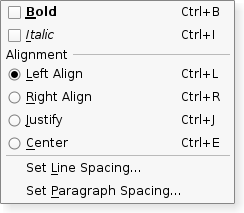

QActionGroup¶
Synopsis¶
Functions¶
- def
actions() - def
addAction(a) - def
addAction(icon, text) - def
addAction(text) - def
checkedAction() - def
isEnabled() - def
isExclusive() - def
isVisible() - def
removeAction(a)
Slots¶
- def
setDisabled(b) - def
setEnabled(arg__1) - def
setExclusive(arg__1) - def
setVisible(arg__1)
Detailed Description¶
The
PySide2.QtWidgets.QActionGroupclass groups actions together.In some situations it is useful to group
PySide2.QtWidgets.QActionobjects together. For example, if you have a Left Align action, a Right Align action, a Justify action, and a Center action, only one of these actions should be active at any one time. One simple way of achieving this is to group the actions together in an action group.Here’s a example (from the Menus example):
alignmentGroup = QActionGroup(self) alignmentGroup.addAction(leftAlignAct) alignmentGroup.addAction(rightAlignAct) alignmentGroup.addAction(justifyAct) alignmentGroup.addAction(centerAct) leftAlignAct.setChecked(True)Here we create a new action group. Since the action group is exclusive by default, only one of the actions in the group is checked at any one time.
A
PySide2.QtWidgets.QActionGroupemits anPySide2.QtWidgets.QActionGroup.triggered()signal when one of its actions is chosen. Each action in an action group emits itsPySide2.QtWidgets.QActionGroup.triggered()signal as usual.As stated above, an action group is
exclusive()by default; it ensures that only one checkable action is active at any one time. If you want to group checkable actions without making them exclusive, you can turn of exclusiveness by callingPySide2.QtWidgets.QActionGroup.setExclusive()(false).Actions can be added to an action group using
PySide2.QtWidgets.QActionGroup.addAction(), but it is usually more convenient to specify a group when creating actions; this ensures that actions are automatically created with a parent. Actions can be visually separated from each other by adding a separator action to the group; create an action and usePySide2.QtWidgets.QAction‘sPySide2.Qt3DInput.Qt3DInput::QAction.setSeparator()function to make it considered a separator. Action groups are added to widgets with theQWidget.addActions()function.See also
-
class
PySide2.QtWidgets.QActionGroup(parent)¶ Parameters: parent – PySide2.QtCore.QObjectConstructs an action group for the
parentobject.The action group is exclusive by default. Call
PySide2.QtWidgets.QActionGroup.setExclusive()(false) to make the action group non-exclusive.
-
PySide2.QtWidgets.QActionGroup.actions()¶ Return type: Returns the list of this groups’s actions. This may be empty.
-
PySide2.QtWidgets.QActionGroup.addAction(text)¶ Parameters: text – unicode Return type: PySide2.QtWidgets.QActionCreates and returns an action with
text. The newly created action is a child of this action group.Normally an action is added to a group by creating it with the group as parent, so this function is not usually used.
See also
QAction.setActionGroup()
-
PySide2.QtWidgets.QActionGroup.addAction(icon, text) Parameters: - icon –
PySide2.QtGui.QIcon - text – unicode
Return type: Creates and returns an action with
textand anicon. The newly created action is a child of this action group.Normally an action is added to a group by creating it with the group as its parent, so this function is not usually used.
See also
QAction.setActionGroup()- icon –
-
PySide2.QtWidgets.QActionGroup.addAction(a) Parameters: a – PySide2.QtWidgets.QActionReturn type: PySide2.QtWidgets.QActionAdds the
actionto this group, and returns it.Normally an action is added to a group by creating it with the group as its parent, so this function is not usually used.
See also
QAction.setActionGroup()
-
PySide2.QtWidgets.QActionGroup.checkedAction()¶ Return type: PySide2.QtWidgets.QActionReturns the currently checked action in the group, or 0 if none are checked.
-
PySide2.QtWidgets.QActionGroup.hovered(arg__1)¶ Parameters: arg__1 – PySide2.QtWidgets.QAction
-
PySide2.QtWidgets.QActionGroup.isEnabled()¶ Return type: PySide2.QtCore.bool
-
PySide2.QtWidgets.QActionGroup.isExclusive()¶ Return type: PySide2.QtCore.bool
-
PySide2.QtWidgets.QActionGroup.isVisible()¶ Return type: PySide2.QtCore.bool
-
PySide2.QtWidgets.QActionGroup.removeAction(a)¶ Parameters: a – PySide2.QtWidgets.QActionRemoves the
actionfrom this group. The action will have no parent as a result.See also
QAction.setActionGroup()
-
PySide2.QtWidgets.QActionGroup.setDisabled(b)¶ Parameters: b – PySide2.QtCore.boolThis is a convenience function for the
enabled()property, that is useful for signals–slots connections. Ifbis true the action group is disabled; otherwise it is enabled.
-
PySide2.QtWidgets.QActionGroup.setEnabled(arg__1)¶ Parameters: arg__1 – PySide2.QtCore.bool
-
PySide2.QtWidgets.QActionGroup.setExclusive(arg__1)¶ Parameters: arg__1 – PySide2.QtCore.bool
-
PySide2.QtWidgets.QActionGroup.setVisible(arg__1)¶ Parameters: arg__1 – PySide2.QtCore.bool
-
PySide2.QtWidgets.QActionGroup.triggered(arg__1)¶ Parameters: arg__1 – PySide2.QtWidgets.QAction
© 2018 The Qt Company Ltd. Documentation contributions included herein are the copyrights of their respective owners. The documentation provided herein is licensed under the terms of the GNU Free Documentation License version 1.3 as published by the Free Software Foundation. Qt and respective logos are trademarks of The Qt Company Ltd. in Finland and/or other countries worldwide. All other trademarks are property of their respective owners.